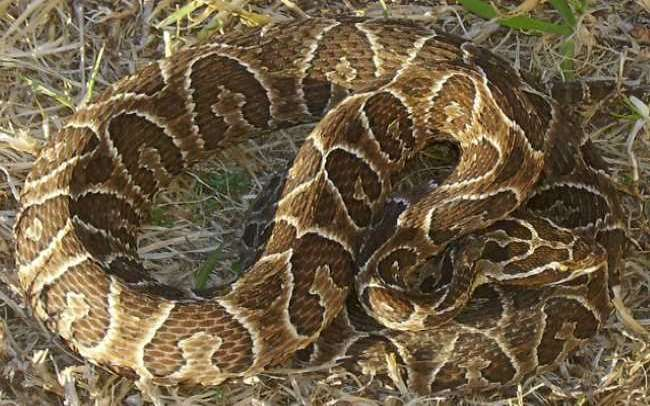

No Venenosas
Eunectes notaeus Cope (Anaconda amarilla)
Tamaño:
Su longuitud llega a ser de hasta 4m
Patrón:
El color general es en tonos de amarillo-oliva.
Países:
Se distribuye en el este de Bolivia, Paraguay, oeste de Brasil, nordeste de Argentina, y noroeste de Uruguay.
Comportamiento:
Presenta hábitos fundamentalmente acuáticos.
Hábitat:
Vive mayormente en hábitats acuáticos, incluyendo charcas, margas, bancos en ríos y arroyos lentos.
Alimentación:
Se alimenta de vertebrados, incluso de grandes dimensiones. Su dieta incluye venados, grandes roedores, aves, reptiles y también animales acuáticos como peces.
Veneno:
Este tipo de serpiente no cuenta con veneno



Tomodon ocellatus Duméril, Bibron & Duméril (Falsa crusera)
Tamaño:
No supera generalmente los 50 cm
Patrón:
La coloración general es en tonos de castaño girsáceo.
Países:
Estas se distribuyen desde las altas elevacio- nes en Bolivia, el centro y sur de Brasil, norte de Argentina, sur-este de Paraguay y Uruguay
Comportamiento:
Agresividad moderada, como defensa ensancha el cuerpo y la cabeza, también arrolla su cola.
Hábitat:
Pastizales, márgenes de cursos de agua, arenales y ambientes urbanos.
Alimentación:
Pastizales, márgenes de cursos de agua, arenales y ambientes urbanos.
Veneno:
Su mordedura no es mortal pero produce edema y dolor.
Erythrolamprus poecilogyrus sublineatus (Culebra de peñarol)
Tamaño:
No supera los 70 cm de longitud total.
Patrón:
Se indentifica rápidamente del resto de las culebras
Países:
En el sur de Río Grande, desde Porto Alegre, Brasil, en la parte inferior de la cuenca del Paraná, en Uruguay y Argentina.
Comportamiento:
Inofensiva para el Humano, especie no agresiva, como defensa se achatan dorsalmente y expelen heces.
Hábitat:
Praderas, cerros pedregosos, humedales, ambientes forestales y zonas urbanas.
Alimentación:
Anfibios y sus larvas, peces, pequeños reptiles, artrópodos y pequeños roedores.
Veneno:
No es venenosa.
Tantilla melanocephala (Culebra Roja de Cabeza Negra)
Tamaño:
No supera normalmente los 30 cm de longitud total.
Patrón:
La región dorsal es castaño rojizo.
Países:
se distribuye en México, Guatemala, El Salvador, Honduras, Nicaragua, Costa Rica, Panamá, Trinidad y Tobago, algunas islas caribeñas, Colombia, Venezuela, Brasil, Argentina, Bolivia, Uruguay, Guyana, Surinam, Guayana Francesa, Ecuador y Perú
Comportamiento:
No es una serpiente agresiva. Como mecanismo de defensa, cuando es capturada, tiende a mover su cuerpo tratando de escapar, no muerde
Hábitat:
pastizales, pedregales, sabanas, bosques
Alimentación:
Se alimenta de artrópodos.
Veneno:
No es una serpiente venenosa.
Boiruna maculata (Mussurana)
Tamaño:
Puede llegar hasta aproximadamente 2 m de longitud total.
Patrón:
La coloración negra permite su reconocimiento del resto de las especies presentes en Uruguay.
Países:
Bolivia, Brasil, Uruguay, Paraguay, Argentina
Comportamiento:
Especie nunca agresiva.
Hábitat:
bosques, matorrales, parderas pedregosas, montes, cerca de cursos de agua y lagunas
Alimentación:
pequeños mamíferos, lagartijas. Es muy conocida popularmente por sus hábitos ofiófagos los cuales incluyen las especies de los géneros Bothrops y Crotalus.
Veneno:
no está exenta de veneno,aunque no es letal para el ser humano.
Philodryas patagoniensis (Parejera)
Tamaño:
Puede llegar a medir 1.5 m de longitud total.
Patrón:
La coloración general es en tonos de verde
Países:
Se distribuye por Brasil, Bolivia, Paraguay, Argentina, Uruguay.
Comportamiento:
Se refugian bajo piedras y troncos.
Hábitat:
Se encuentra normalmente en el sustrato aunque puede trepar también sobre los arbustos y árboles pequeños.
Alimentación:
Se alimenta de ranas, sapos, lagartijas, culebras incluyendo las de su misma especie, pichones, ratones y arañas.
Veneno:
Puede reaccionar mordiendo, pero su mordedura
Tamaño:
Patrón:
Países:
Comportamiento:
Hábitat:
Alimentación:
Veneno: